Costa Blanca · Altea
Immobilien zum Verkauf in Altea
Villen mit Meerblick in Altea Hills und Altea la Vella und Häuser in den Dörfern gleich hinter der Küste. Hier finden Sie die Immobilien, die wir heute in und um Altea verkaufen, mit einem kurzen Überblick über die Viertel und die echten Kaufkosten.
- 7Villen zum Verkauf in Altea
- ab 1.295.000 €für eine Villa
- ca. 1 Stundezum Flughafen Alicante-Elche
- 11 kmbis Benidorm
Jetzt zu verkaufen
Immobilien zum Verkauf in Altea
Villen mit 3 bis 5 Schlafzimmern, eigenem Pool und Blick auf das Meer oder die Berge, in Altea Hills, Altea la Vella und den Hügeln rund um die Stadt. Die Preise sind die heutigen Angebotspreise; fragen Sie uns nach der aktuellen Verfügbarkeit.
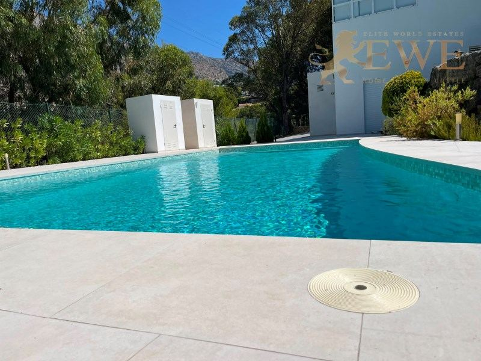
Altea
Completely Renovated Villa by the Golf Course in Altea la Vella
1.295.000 €
4 Schlafzimmer · 3 Bäder · 324 m²Ref. EWE3827
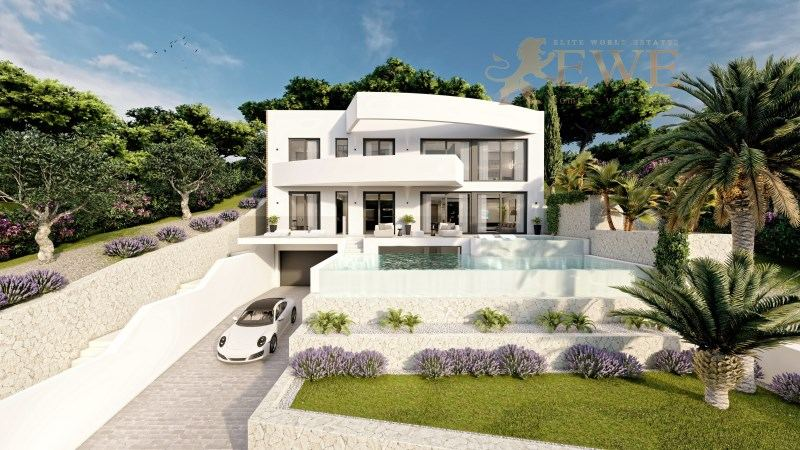
Altea
Luxury villa with sea views in Altea
2.090.000 €
4 Schlafzimmer · 5 Bäder · 500 m²Ref. EWE2105
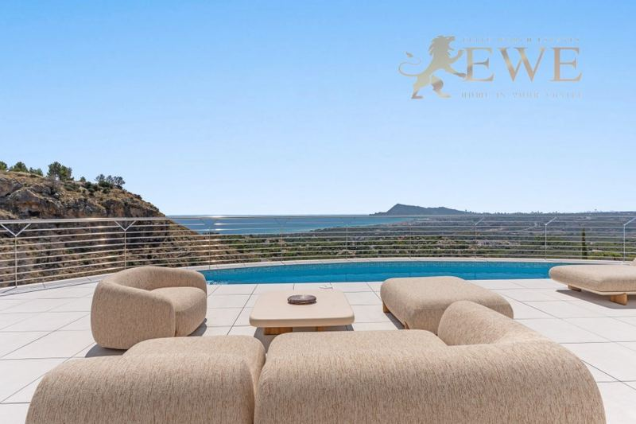
Altea
Excellent villa with panoramic mountain and sea views in Altea
2.146.000 €
4 Schlafzimmer · 5 Bäder · 405 m²Ref. EWE014
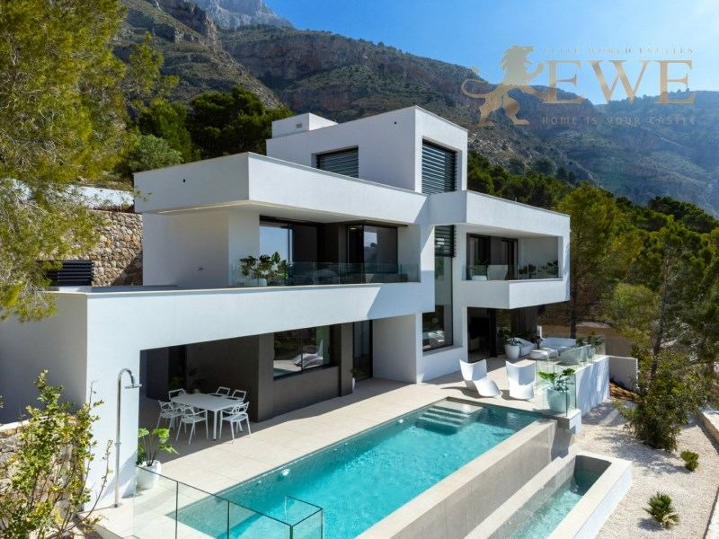
Altea
Wonderful villa with spectacular sea views in Altea
2.200.000 €
3 Schlafzimmer · 5 Bäder · 218 m²Ref. EWE1616
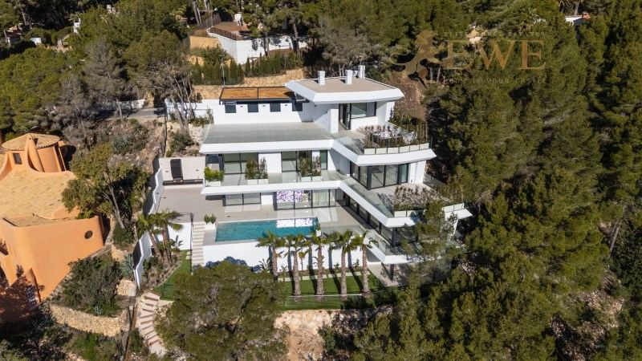
Altea
Stunning villa with sea views for sale in Altea
2.250.000 €
4 Schlafzimmer · 6 Bäder · 328.62 m²Ref. EWE2400
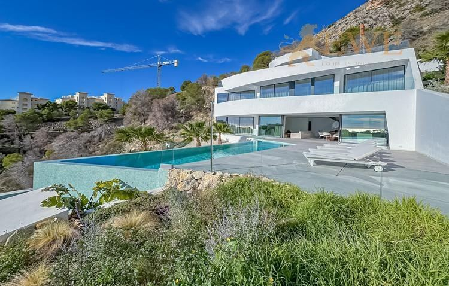
Altea
A dream villa with perfect sea views in Altea Hills
2.370.000 €
4 Schlafzimmer · 5 Bäder · 412 m²Ref. EWE3338
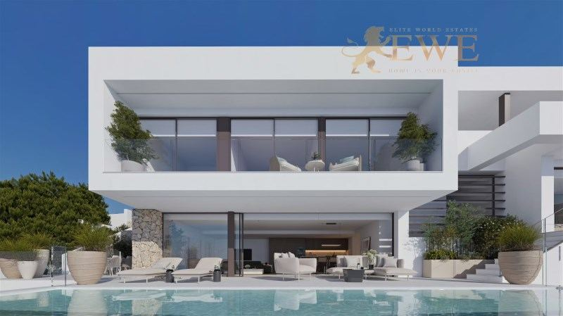
Altea
Villa for sale in Altea with sea views and private infinity pool
2.400.000 €
4 Schlafzimmer · 5 Bäder · 228 m²Ref. EWE1614
Ganz in der Nähe
In der Nähe von Altea: Albir, Polop, La Nucia
Zehn bis fünfzehn Minuten von Altea: Wohnungen und Villen am Strand von Albir sowie Villen und Reihenhäuser mit Bergblick in Polop und La Nucía, oft für weniger Geld.
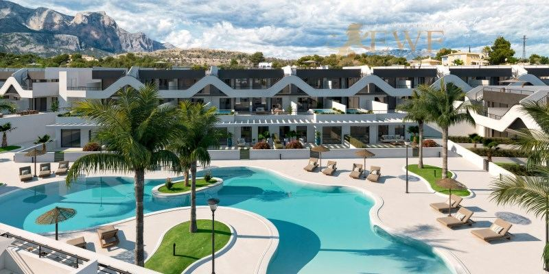
Albir
Excellent Sea View Apartments in Alfaz del Pi
278.000 €
2 Schlafzimmer · 2 Bäder · 74.02 m²Ref. EWE3787
Fertigstellung: 4Q 2027
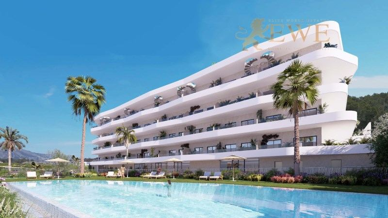
La Nucia
Modern Apartments in La Nucía's Prestigious Sports District
349.388 €
2 Schlafzimmer · 2 Bäder · 63 m²Ref. EWE3779
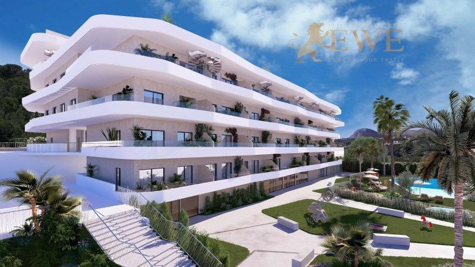
La Nucia
Penthouse with an 80 m² Private Solarium and Mountain Views in La Nucía
449.427 €
2 Schlafzimmer · 2 Bäder · 63 m²Ref. EWE3780
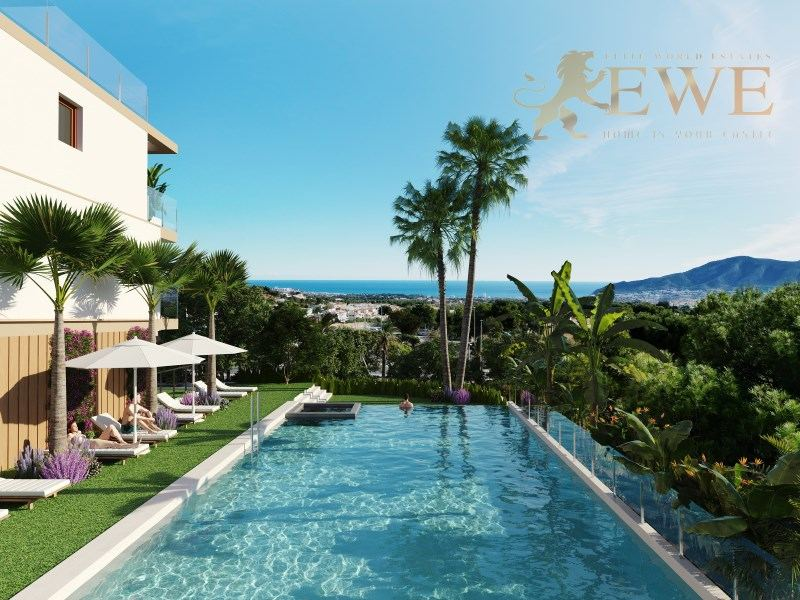
La Nucia
Spacious Townhouse with Sea Views for Sale in La Nucía
465.000 €
4 Schlafzimmer · 3 Bäder · 134 m²Ref. EWE3260
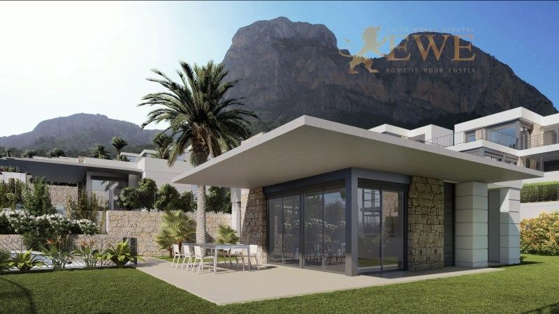
Polop
Superb villa with mountain views in picturesque Polop
470.000 €
3 Schlafzimmer · 2 Bäder · 214 m²Ref. EWE3389
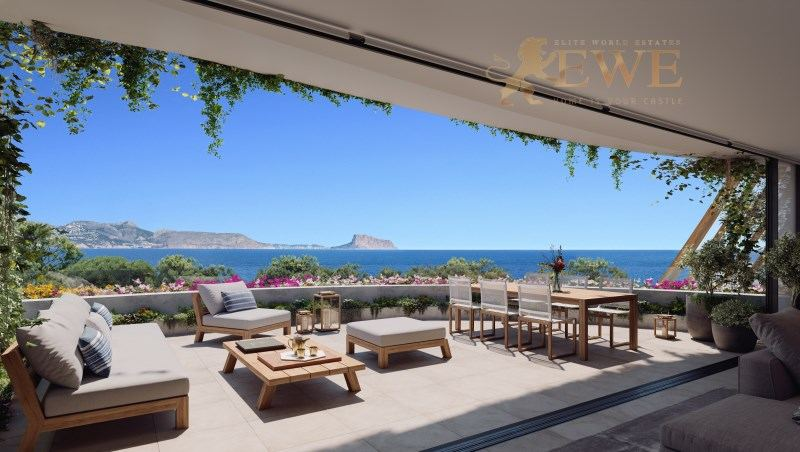
Albir
Fantastic apartment overlooking the sea, close to Albir beach
480.000 €
2 Schlafzimmer · 2 Bäder · 64 m²Ref. EWE1610
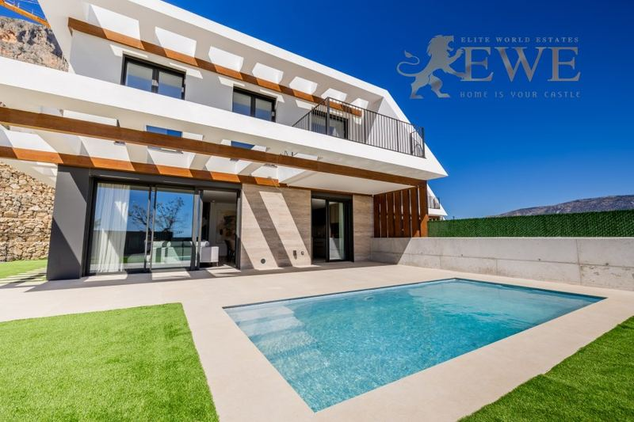
Polop
New design of elegant houses with a sea view in Polop
514.400 €
3 Schlafzimmer · 2 Bäder · 90 m²Ref. EWE3274
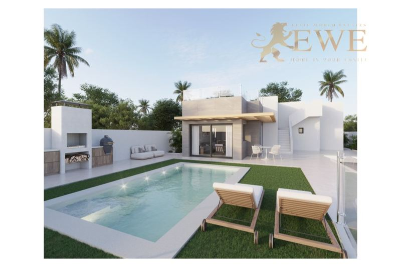
Polop
Newly built house with swimming pool in Polop
585.000 €
3 Schlafzimmer · 2 Bäder · 107 m²Ref. EWE2410
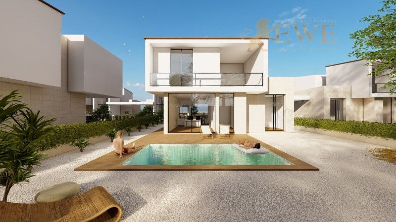
La Nucia
Elegant villa with pool in picturesque La Nucía
585.000 €
3 Schlafzimmer · 3 Bäder · 127 m²Ref. EWE3729
Fertigstellung: 4Q 2027
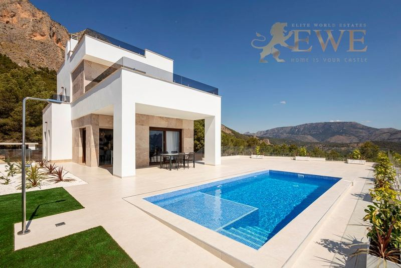
Polop
Dream villa with pool in picturesque Polop
598.000 €
3 Schlafzimmer · 3 Bäder · 129 m²Ref. EWE3435
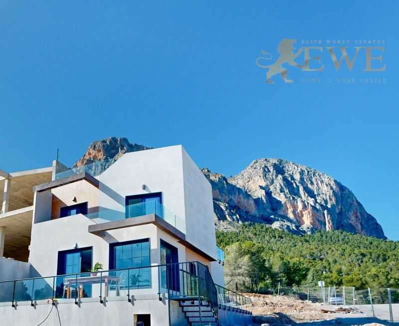
Polop
Magnificent terraced house with mountain views in Polop
598.125 €
3 Schlafzimmer · 2 Bäder · 110 m²Ref. EWE2363
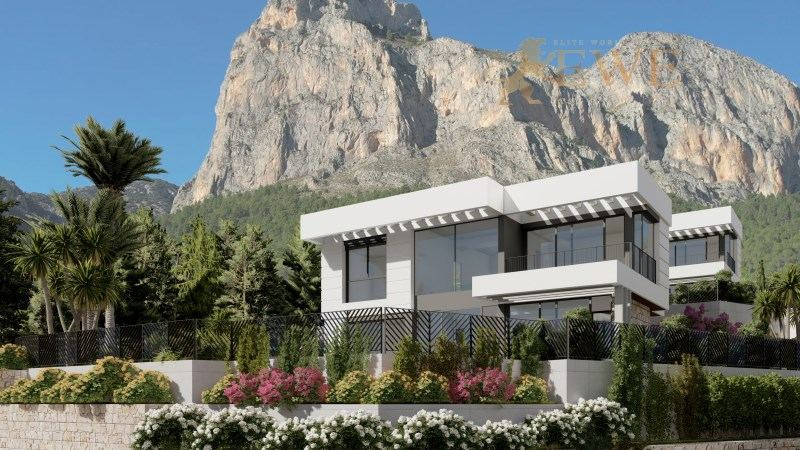
Polop
Superb villa with mountain views in picturesque Polop
607.000 €
3 Schlafzimmer · 2 Bäder · 214 m²Ref. EWE3705

Albir
Exclusive apartment 5 min walk to the beach in Albir
620.000 €
3 Schlafzimmer · 2 Bäder · 99 m²Ref. EWE1911
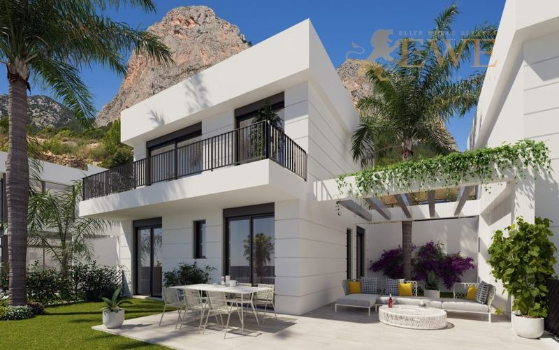
Polop
Modern Duplex located at the foot of Mount Ponoing in Polop.
625.000 €
3 Schlafzimmer · 2 Bäder · 240 m²Ref. EWE1841
Bezugsfertig
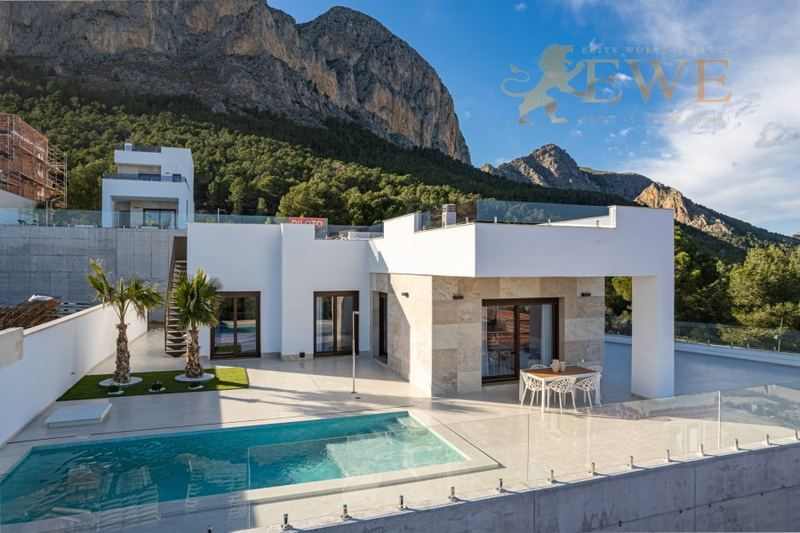
Polop
Beautiful villa with sea and mountain views in picturesque Polop
649.000 €
3 Schlafzimmer · 3 Bäder · 129 m²Ref. EWE3717
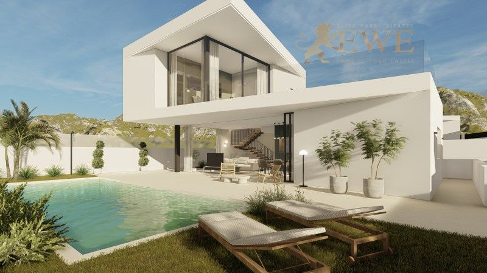
Polop
Modern villa with beautiful sea and mountain views in Polop
755.000 €
4 Schlafzimmer · 5 Bäder · 170 m²Ref. EWE3261

Albir
Mediterranean villa in a prestigious location in Albir
875.000 €
4 Schlafzimmer · 3 Bäder · 165.35 m²Ref. EWE2299
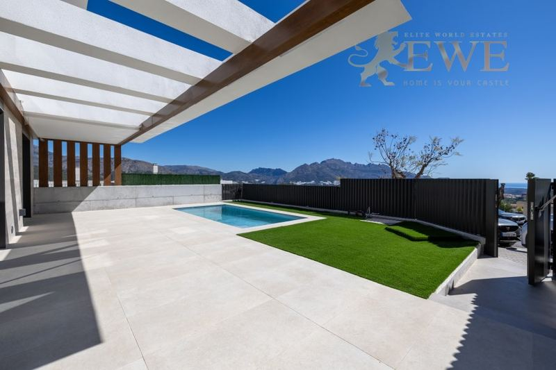
Polop
Mediterranean villa with sea and mountain views in Polop
939.000 €
4 Schlafzimmer · 4 Bäder · 150 m²Ref. EWE3275
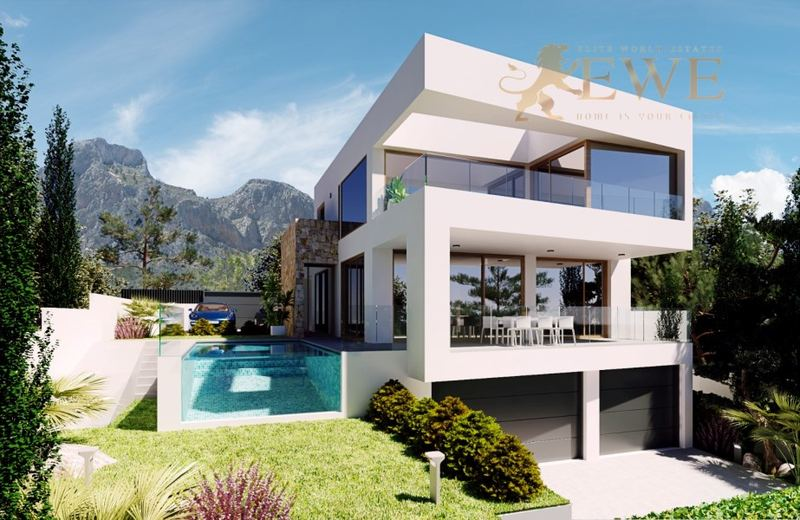
Polop
Mediterranean villa with infinity pool and mountain views in Polop
985.000 €
3 Schlafzimmer · 3 Bäder · 293.85 m²Ref. EWE2246

Albir
Unique Penthouse with sea view in Playa del Albir
1.100.000 €
3 Schlafzimmer · 2 Bäder · 117 m²Ref. EWE1724

La Nucia
Spacious, ready-to-move-in villa with sea views in La Nucia
2.825.000 €
4 Schlafzimmer · 5 Bäder · 535 m²Ref. EWE3562
Die Stadt
Leben in Altea
Altea ist eine Stadt mit rund 22.000 Einwohnern an der nördlichen Costa Blanca, zwischen Benidorm und Calpe. Die weiße Altstadt liegt auf einem Hügel über dem Meer, gekrönt von der Kirche Nuestra Señora del Consuelo mit ihren blau-weiß gefliesten Kuppeln, die man von weit entlang der Küste sieht.
Die meisten Strände von Altea bestehen aus glatten Kieseln, deshalb ist das Wasser sehr klar. Die Playa de la Roda unterhalb der Altstadt hat eine Promenade und Cafés, ruhigere Buchten liegen im Norden. Die Stadt hat eine entspannte, künstlerische Atmosphäre, mit Galerien, kleinen Restaurants und einer Kunsthochschule.
Die Immobilien hier sind vor allem Villen: in Altea Hills, einer bewachten Anlage an den Hängen über dem Jachthafen, und rund um Altea la Vella und seinen Golfplatz im Hinterland. Der Flughafen Alicante-Elche ist mit dem Auto etwa eine Stunde entfernt, Benidorm etwa 11 km und Calpe etwa 20 km.
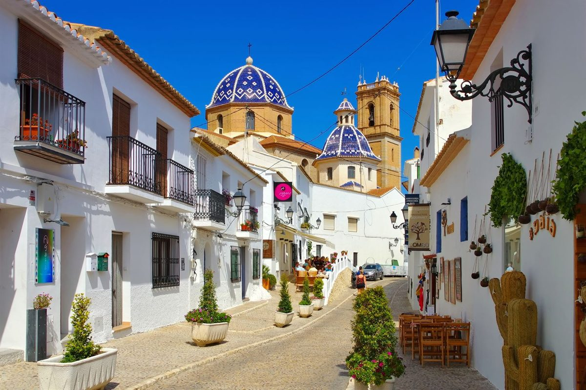
Wo kaufen
Die wichtigsten Viertel von Altea
Altstadt
Weiße Häuser und enge Gassen auf dem Hügel um die Kirche, mit Blick über die Bucht. Kleine Häuser, wenige im Verkauf und hohe Nachfrage.
Strandpromenade und Playa de la Roda
Die Promenade und der Hauptstrand unterhalb der Altstadt, mit Cafés und Restaurants. Wohnungen nahe am Meer.
Altea Hills
Eine bewachte Anlage auf den Hügeln über dem Jachthafen, mit Sicherheitsdienst und weitem Meerblick. Luxusvillen, viele mit Infinity-Pool.
Altea la Vella
Das alte Dorf im Hinterland, nahe am Golfplatz und an den Bergen. Villen mit großen Gärten, ruhig und wenige Minuten von der Küste.
Albir
Der benachbarte Strandort in L'Alfàs del Pi, zwischen Altea und Benidorm. Wohnungen und Villen nahe einer langen Promenade.
Polop und La Nucía
Dörfer am Fuß der Berge, 10 bis 15 Minuten vom Strand. Villen und Reihenhäuser mit Aussicht, oft für weniger Geld.
Budget
Was der Kauf in Altea kostet
Zum Kaufpreis kommen Steuern und Gebühren. Für eine neue Villa zu 2.090.000 € sind das zum Beispiel 209.000 € Mehrwertsteuer und 29.260 € Stempelsteuer, dazu Notar, Grundbuch und Anwalt. Für Bestandsimmobilien gelten andere Steuern, fragen Sie uns also immer nach der genauen Summe für die Immobilie, die Ihnen gefällt.
| Neubau | 10 % Mehrwertsteuer (IVA) + 1,4 % Stempelsteuer (AJD) |
|---|---|
| Bestandsimmobilie | 9 % Grunderwerbsteuer (ITP), 11 % über 1 Mio. € |
| Notar, Grundbuch, Anwalt | ca. 1,5–2,5 % des Preises |
| Jedes Jahr | Grundsteuer IBI und Gemeinschaftskosten, je nach Immobilie |
Fragen
Immobilienkauf in Altea: Fragen und Antworten
Was kostet eine Villa in Altea?
Unsere Villen in Altea beginnen heute bei 1.295.000 €, für eine renovierte Villa am Golfplatz in Altea la Vella. Die meisten Villen mit Meerblick, die wir in Altea und Altea Hills verkaufen, kosten zwischen 2 Mio. € und 2,4 Mio. €. In Polop und La Nucía gibt es Villen ab etwa 470.000 €.
In welchem Viertel von Altea kauft man am besten?
Das hängt davon ab, was Sie suchen. Altea Hills steht für Meerblick, Sicherheit und Luxusvillen. Altea la Vella ist ruhiger, nahe am Golfplatz und an den Bergen. Die Strandpromenade passt zu Käufern, die eine Wohnung nahe am Strand wollen, und Albir, Polop und La Nucía bieten mehr Platz fürs Geld.
Hat Altea Sandstrände?
Die meisten Strände in Altea sind Kieselstrände, deshalb ist das Wasser sehr klar. Wer Sand lieber mag: Albir und Benidorm sind 10 bis 20 Minuten entfernt.
Wie weit ist Altea vom Flughafen entfernt?
Der Flughafen Alicante-Elche Miguel Hernández liegt etwa 60 km entfernt, rund eine Stunde mit dem Auto.
Welche Kosten kommen zum Kaufpreis hinzu?
Bei einem Neubau zahlen Sie 10 % Mehrwertsteuer und 1,4 % Stempelsteuer. Bei einer Bestandsimmobilie zahlen Sie 9 % Grunderwerbsteuer (11 % über 1 Mio. €). Notar, Grundbuch und Anwalt kosten zusammen etwa 1,5–2,5 %.
Können Ausländer in Altea eine Immobilie kaufen?
Ja. Jeder kann in Spanien eine Immobilie kaufen. Sie brauchen eine spanische Steuernummer (NIE) und meist ein spanisches Bankkonto, und wir helfen Ihnen bei beidem. Mehr dazu in unserem Ratgeber zur NIE-Nummer.
Aus unserem Blog
Lesen Sie vor dem Kauf


Sie suchen ein Zuhause in Altea?
Nennen Sie uns Ihr Budget und Ihre Wünsche. Wir antworten innerhalb eines Werktags, auf Deutsch, Englisch, Spanisch oder Polnisch.